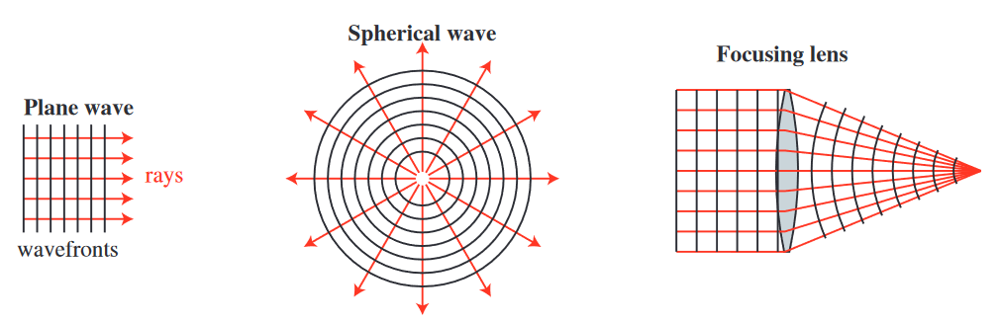

2. Geometrical Optics#
2.1. Background#
Start with an arbitrary field given by
and
The term \(k_0 \phi\) defines the planes of constant phase (the wavefront).
Apply Maxwell’s equation
The electric field has both a vector and a scalar component
Use the vector identity
to get
The gradient of the exponential term becomes
Equation (2.6) becomes
This equation is also equal to \(-j \omega \mu \vec{H}_0 \exp (-j k_0 \phi)\) resulting in
Eliminate the common exponential terms to yield
which can be rearranged to yield
Follow a similar process the following equations can also be derived
In the geometrical optics approximation, \(\lambda \to 0\) and \(k_0 \to \infty\) results in
This means that \(E_0\) and \(H_0\) are both perpendicular to \(\nabla \phi\). Therefore, \(\nabla \phi\) defines the ray direction, which is also the power flow direction.

Are the rays essentially narrow beams of light (like laser beams)?
No!
Very narraow beams of light have very rapid divergence because of diffraction.
Rays are simply used to characterize the propagation of a wavefront.
Even though rays are not actually narrow beams of light, the can still be used to analyze irradiance by looking at ray density.
Example: Irradiance
A line source has a power of \(P = 1 W/m\). A linear detector with a width of \(D = 1 mm\) is placed \(R = 1 m\) away from the line source. How much power is received by the detector?
Solution
If you trace N equally spaced rays out of the line source the angular separation between the rays is
The angle to the detector is
For \(N = 10^5\) this becomes
The received power is then
The actual power is
The concept of calculating irradiance using ray tracing enables irradiance calculation for arbitrary shapes and optical systems.
2.2. Basic Postulates of Geometrical Optics#
Rays are normal to the wavefront and vice versa.
Rays satisfy the laws of reflecton and refraction.
The optical path length along any ray between two wavefronts are equal.
Irradiance at any point is proportional to the ray density at that point.
Other resulting corollaries are:
In a uniform medium, light travels along striaght lines.
The optical paths are reversible.
The optical path difference between two neighboring rays is zero.
Ray tracing can be used to:
Analyze optical systems
Optimize lenses
Determine focal length
Deterine magnification
Determine image quality
etc.Illumination analysis/design
Head light reflectors
Light pipes
etc.Image artifacts
Multiple reflections off of lens surfaces
Scatter light off of surfaces